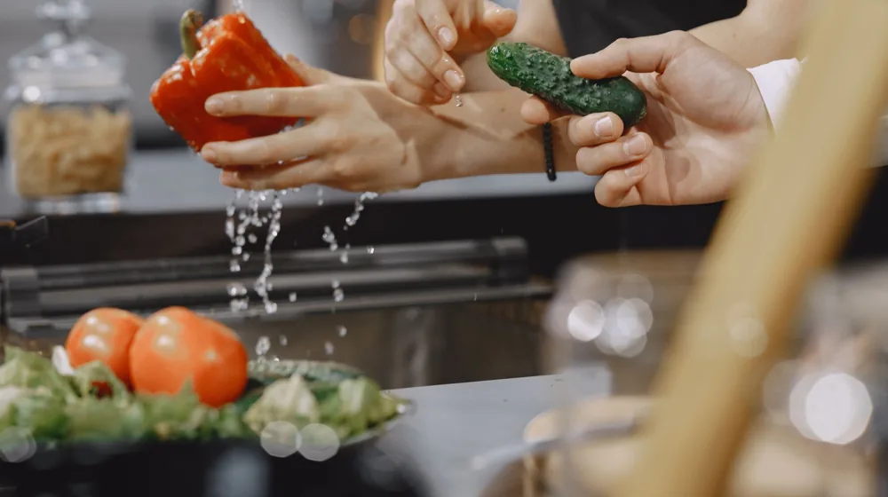

제철 채소 똑똑하게 고르고 보관하는 비법: 2026년 8월엔 이걸로 시작!
사진: Matheus Bertelli / Pexels (무료 이미지, 출처 표기)
제철 채소 고르는 법, 이것부터 확인하세요!

식탁에 오르는 채소가 싱싱해야 맛과 영양을 온전히 즐길 수 있습니다. 제철 채소는 그 자체로 신선도가 높지만, 조금만 더 신경 써서 고르면 더욱 만족스러운 쇼핑이 가능합니다. 실패 없는 채소 구매를 위한 핵심 기준을 알려드립니다.
- 외형과 색깔: 채소 고르기의 가장 기본입니다. 잎채소는 푸른빛이 선명하고 시들지 않은 것을, 뿌리채소는 흠집 없이 단단하며 고유의 색이 진한 것을 선택하세요. 열매채소는 윤기가 흐르고 색이 균일해야 좋습니다.
- 무게와 촉감: 채소를 들어봤을 때 묵직한 느낌이 들고, 만졌을 때 단단하며 탄력이 있는 것이 신선합니다. 특히 수분 함량이 높은 채소(오이, 호박 등)는 속이 꽉 찬 느낌이 드는 것이 좋습니다.
- 향과 꼭지: 신선한 채소는 고유의 향이 살아있습니다. 냄새를 맡아봤을 때 흙냄새나 풀냄새가 나는 것이 좋습니다. 또한, 꼭지나 줄기 부분이 마르지 않고 싱싱한 초록색을 띠는지 확인하세요.
- 상처와 벌레: 상처가 있거나 벌레 먹은 흔적이 심한 채소는 피하는 것이 좋습니다. 상처 부위는 쉽게 변질될 수 있으며, 벌레가 먹은 흔적은 농약 사용 여부와는 별개로 신선도가 떨어질 가능성이 있습니다.
채소 종류별 최적 보관법: 신선도를 오래 유지하는 비결
채소는 종류에 따라 보관 방법이 달라집니다. 올바른 방법으로 보관하면 신선도를 오래 유지하고 버리는 음식물 쓰레기를 줄일 수 있습니다. 2026년 8월 기준으로 일반적인 보관법을 안내해 드립니다. 정확한 보관 기간은 환경에 따라 달라질 수 있습니다.
2026년 8월, 놓치지 말아야 할 제철 채소는?
매년 8월은 여름 채소의 풍부함이 절정에 달하는 시기입니다. 2026년 8월 기준으로 특히 신선하고 맛있는 채소는 다음과 같습니다.
- 가지: 보라색 윤기가 흐르고 묵직하며 단단한 것이 좋습니다. 냉장고에 보관 시 하나씩 랩으로 싸면 신선도가 오래갑니다.
- 애호박: 표면에 흠집이 없고 진한 녹색을 띠며 꼭지가 마르지 않은 것을 고르세요. 냉장 보관이 좋으며, 잘라서 보관할 때는 씨 부분을 제거하는 것이 좋습니다.
- 오이: 곧고 단단하며 가시가 살아있는 것이 신선합니다. 물기를 제거하고 랩으로 싸서 냉장고에 보관하세요.
- 고추(꽈리고추, 청양고추): 색이 선명하고 윤기가 흐르며 탄력이 있는 것이 좋습니다. 밀폐 용기에 담아 냉장 보관하면 비교적 오래 유지됩니다.
- 깻잎: 잎이 싱싱하고 진한 녹색을 띠며 구멍이 없는 것을 고르세요. 물기를 제거하지 않고 키친타월에 감싸 밀폐 용기에 넣어 냉장 보관합니다.
이 외에도 감자, 토마토, 옥수수 등 다양한 채소가 8월에 제철을 맞이합니다. 지역과 기후에 따라 제철 시기는 조금씩 달라질 수 있으므로, 구매 시점의 신선도를 직접 확인하는 것이 가장 중요합니다.
싱싱한 채소 구매 시 꼭 알아둘 주의사항
제철 채소를 구매하고 보관하는 것도 중요하지만, 몇 가지 주의사항을 알고 있으면 더욱 건강하고 알뜰한 식생활을 꾸릴 수 있습니다.
- 과한 세척 후 보관은 금물: 흙 묻은 채소라도 바로 먹을 것이 아니라면 씻지 않고 보관하는 것이 좋습니다. 씻으면 물기가 남아 쉽게 무르거나 세균 번식의 원인이 될 수 있습니다.
- 구입 후 빠른 소비: 아무리 잘 보관해도 채소는 시간이 지날수록 신선도와 영양소가 떨어집니다. 필요한 만큼만 구입하고 가급적 빨리 소비하는 것이 가장 좋은 방법입니다.
- 냉장고 채소 칸 활용: 대부분의 채소는 저온 다습한 환경을 좋아합니다. 냉장고의 채소 칸은 이러한 환경을 유지하도록 설계되었으므로 적극적으로 활용하세요.
- 에틸렌 가스 주의: 사과, 토마토, 바나나 등 일부 과일과 채소는 숙성을 촉진하는 에틸렌 가스를 배출합니다. 에틸렌에 민감한 다른 채소(오이, 상추 등)와 함께 보관하지 않도록 주의해야 합니다.
제철 채소와 관련해 자주 묻는 질문
제철 채소에 대해 궁금해하는 분들을 위해 몇 가지 질문에 대한 답변을 정리했습니다.
Q. 제철 채소를 꼭 먹어야 하나요?
네, 농림축산식품부 등 관련 기관에 따르면 제철 채소는 그 시기에 가장 영양소가 풍부하고 맛이 좋습니다. 또한, 자연의 순리에 따라 재배되므로 재배 과정에서 불필요한 비료나 농약 사용을 줄일 수 있어 더 건강한 식재료로 볼 수 있습니다. 가격도 비시즌 채소보다 저렴한 경우가 많아 경제적입니다.
Q. 유기농 채소가 항상 더 좋은가요?
유기농 채소는 합성 농약이나 화학 비료 없이 재배되어 환경에 미치는 영향이 적고, 일부 영양소 함량이 높다는 연구 결과도 있습니다. 그러나 일반 채소도 안전 관리 기준에 따라 재배되므로, 유기농 여부보다는 얼마나 신선한지, 어떻게 재배되었는지(로컬푸드 등)를 고려하는 것이 중요합니다. 유기농 마크를 확인하는 것이 신뢰도를 높이는 방법입니다.
Q. 채소를 미리 손질해서 보관해도 괜찮을까요?
채소를 미리 손질하거나 잘라서 보관하면 조리 시간을 단축할 수 있습니다. 하지만 잘려진 단면을 통해 영양소 손실이나 산패가 빠르게 진행될 수 있으므로, 손질 후에는 밀폐 용기에 넣어 공기와의 접촉을 최소화하고 최대한 빨리 소비해야 합니다. 대파나 양파처럼 활용 빈도가 높은 채소는 냉동 보관하는 것도 좋은 방법입니다.
🔗 이 글도 함께 보면 좋아요: 내 몸에 꼭 맞는 한방차, 실패 없이 재료 고르는 3가지 비법
관련 추천 상품
채소 보관 용기, 야채 밀폐용기 관련 인기 상품 보러가기
이 포스팅은 쿠팡 파트너스 활동의 일환으로, 이에 따른 일정액의 수수료를 제공받습니다.